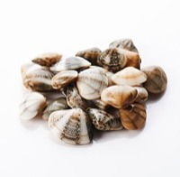

あさりの漁獲量 都道府県ランキング
全16都道府県の順位と漁獲量
あさりの漁獲量が全国で最も多いのは北海道で、1,556 tです。全国（4,439 t）の35%を占めます。

| 順位 | 都道府県 | 漁獲量 | 全国に占める割合 |
|---|---|---|---|
| 1位 | 北海道 | 1,556 t | 35% |
| 2位 | 愛知県 | 1,057 t | 24% |
| 3位 | 福岡県 | 1,011 t | 23% |
| 4位 | 三重県 | 215 t | 4.8% |
| 5位 | 熊本県 | 193 t | 4.3% |
| 6位 | 千葉県 | 188 t | 4.2% |
| 7位 | 長崎県 | 101 t | 2.3% |
| 8位 | 広島県 | 38 t | 0.9% |
| 9位 | 東京都 | 31 t | 0.7% |
| 10位 | 福島県 | 26 t | 0.6% |
| 11位 | 宮城県 | 11 t | 0.2% |
| 12位 | 石川県 | 5 t | 0.1% |
| 13位 | 大分県 | 3 t | 0.1% |
| 14位 | 山口県 | 2 t | 0.0% |
| 15位 | 岩手県 | 1 t | 0.0% |
| 16位 | 佐賀県 | 1 t | 0.0% |
あさりの漁獲量の推移（令和2年〜令和6年）
全国の漁獲量は、令和2年の4,305 tから令和6年の4,439 tへ、3%増えました。1位は入れ替わっています（令和2年は愛知県、令和6年は北海道）。
| 年 | 全国 | 1位 | 2位 | 3位 |
|---|---|---|---|---|
| 令和6年 | 4,439 t | 北海道1,556 t | 愛知県1,057 t | 福岡県1,011 t |
| 令和5年 | 5,514 t | 愛知県2,896 t | 北海道1,469 t | 静岡県363 t |
| 令和4年 | 5,668 t | 愛知県3,001 t | 北海道1,620 t | 三重県306 t |
| 令和3年 | 4,928 t | 愛知県2,364 t | 北海道1,750 t | 三重県195 t |
| 令和2年 | 4,305 t | 愛知県1,602 t | 北海道1,460 t | 静岡県707 t |
この数字について
- 分類：貝の仲間
- 全国の漁獲量：4,439 t
- この数字が表すもの：漁獲量（海面漁業の漁獲量。養殖は含みません）
- 調査：海面漁業生産統計調査（海面漁業） 令和6年
- 16県分を調査（調査していない県は順位に入りません）
あさりの漁獲量について、よくある質問
- あさりの漁獲量が日本一の都道府県はどこですか？
- 北海道です。海面漁業生産統計調査（海面漁業）（令和6年）で1,556 tでした。
- あさりの漁獲量ランキング2位・3位はどこですか？
- 2位は愛知県（1,057 t）、3位は福岡県（1,011 t）です。
- あさりの漁獲量ランキング4位・5位はどこですか？
- 4位は三重県（215 t）、5位は熊本県（193 t）です。あさりの全16県の順位は上の表のとおりです。
- あさりの全国の漁獲量はどれくらいですか？
- 4,439 t（令和6年）です。